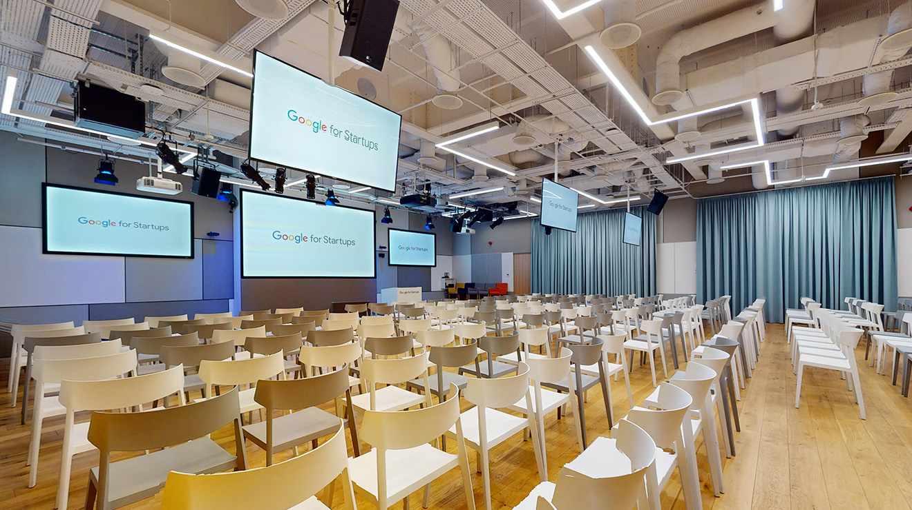
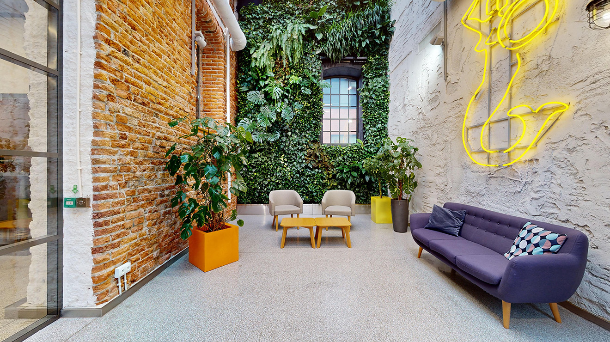
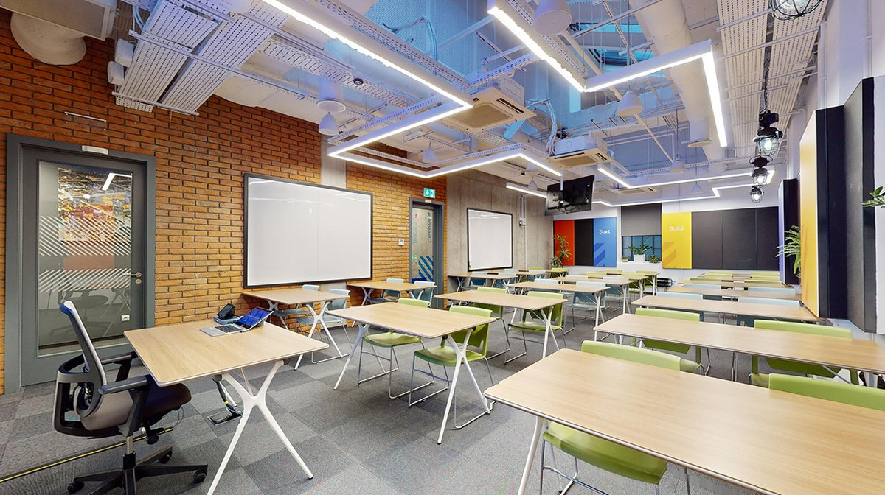

SREday is a worldwide series of community events for engineers who build, ship and run modern software systems. Across cities around the world, we bring together people working in reliability, cloud, DevOps, observability and production engineering to share real-world experience, connect with their local community and explore how these disciplines are evolving in the age of AI.
Canonical, DevSecOps Consultant, EPAM Systems, Hyland, Inter Cars S.A., LTIMindtree, Novo Nordisk, Replika, SRE/DevOps Engineer, VictoriaMetrics
We'll announce more talks soon, stay tuned!


Centrum Praskie Koneser, Plac Konesera 10
03-736 Warsaw, Poland


